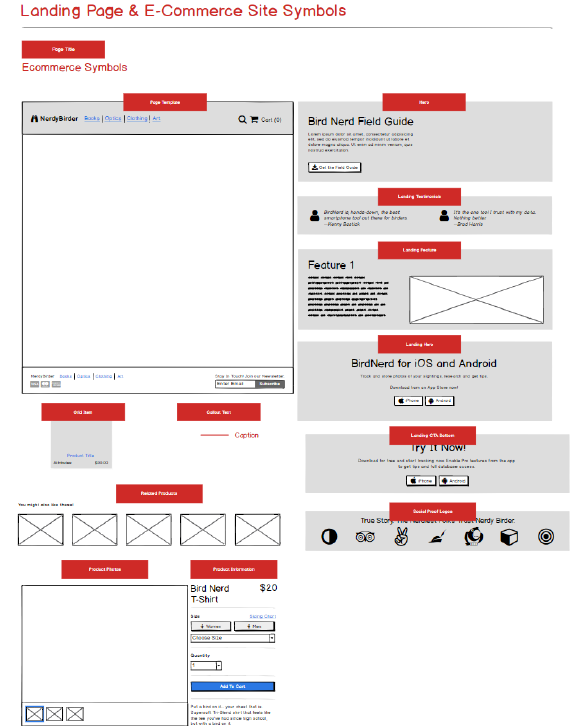

Teniendo en cuenta la siguiente plantilla https://wireframestogo.com/58f3-Landing-Page-&-E-Commerce/. Realiza con Balsamic el mismo diseño (descarga el BMPR) e importalo un nuevo proyecto.
Para descargar el archivo .bmpr, pulse aqui.
Para descargar la documentación el pdf, pulse aquí.
El resultado seria este.
